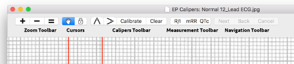

EP Calipers 101
Rationale
EP Calipers provides electronic calipers for measuring intervals on images of electrocardiograms (ECGs) or electrophysiologic recordings. In this age of electronic health records, ECG recordings are created electronically and transmitted digitally. Even in cases where hardcopies are created (e.g. telemetry strips), it is common for doctors, nurses and medical technicians to take pictures of these recordings and send them to each other using smart phones and tablets. In the past ECG measurements were made with a pair of calipers, an often inaccurate tool, especially given the typical slow recording speeds of standard ECGs (25 mm/sec). Automated ECG interval measurements are helpful, though they too are often inaccurate. I believe that the human eye is better at estimating the end of the T wave than a computer! In the electrophysiology lab electronic calipers are included as part of the recording system. EP Calipers is intended to provide similar electronic calipers for use on your Mac. ECG zooming allows more accurate measurements than can be obtained with mechanical calipers. And accurate measurements are important, as the risk of drug-related complications like Torsade de Pointes can be avoided by carefully following the QTc interval, for example. EP Calipers makes such measurements very easy!
It's intuitive
When EP Calipers starts, a sample ECG is loaded. Click a caliper icon on the toolbar to add a caliper to the screen. Move the caliper around by clicking on the caliper's cross-bar and dragging it with the mouse or your finger on the track pad. Expand and contract the caliper by dragging the bars on either end of the caliper. Pinch and zoom the underlying ECG or use the zoom toolbar to enlarge or shrink the image as needed. If the ECG is bigger than your screen, you can drag the image around with your mouse or finger. The rest of these help pages will go over how to load ECG images, add and delete calipers, calibrate the calipers and make advanced measurements like the corrected QT interval.
Toolbars
The program is controlled either by the toolbar buttons at the top of the window, or by the menu at the top of the screen. The toolbar looks like this:

Figure 1: Toolbars
Here are the toolbars. Note that not all toolbars will be available all the time, depending on whether calibration has been performed. Disabled toolbars are "grayed" out.
Zoom toolbar
 Zoom in
Zoom in Zoom out
Zoom out- Zoom to actual size
Cursors toolbar
 Grab and move image or calipers
Grab and move image or calipers- Lock image (can only move calipers)
Calipers toolbar
- Add time (horizontal) caliper
- Add amplitude (vertical) caliper
- Calibrate selected caliper
- Clear all calibration
Measurement toolbar
- R/I Toggle heart rate and time interval
- mRR Calculate mean interval from several intervals
- QTc Measure corrected QT (QTc)
Navigation toolbar
- Next Go to next measurement step
- Back Go back a step
- Cancel Cancel measurement